Welcome to the Data Analysis section of the project.
In this section, we spend most of the time on
Data Cleansing
Data Exploration
Data Preparation
These are the crucial steps for any machine learning project as hygiene data yields robust models.
In this section, I have used the following python libraries:
Numpy
Pandas
Matplotlib
Pylab
## Training Data: (7000, 12100)## Testing Data: (2734, 12100)## 0 1 2 3 4 5 ... 12095 12096 12097 12098 12099 Volcano
## 0 95 101 99 103 95 86 ... 99 117 116 118 96 1
## 1 91 92 91 89 92 93 ... 105 104 100 90 81 0
## 2 87 70 72 74 84 78 ... 80 91 80 84 90 0
## 3 0 0 0 0 0 0 ... 90 92 80 88 96 0
## 4 114 118 124 119 95 118 ... 104 106 117 111 115 0
##
## [5 rows x 12101 columns]The data that we are dealing with is image data. So, there is a good chance for data corruption.
It seems (also mentioned in data dictionary) that few records are corrupted. Take a look at the fourth record (index = 3) in the above sample dataframe. The record seems corrupted because it is having a bunch of 0’s for the pixel values.
Let’s plot and see a few records and then we will build a work around to find and filter the corrupted records.
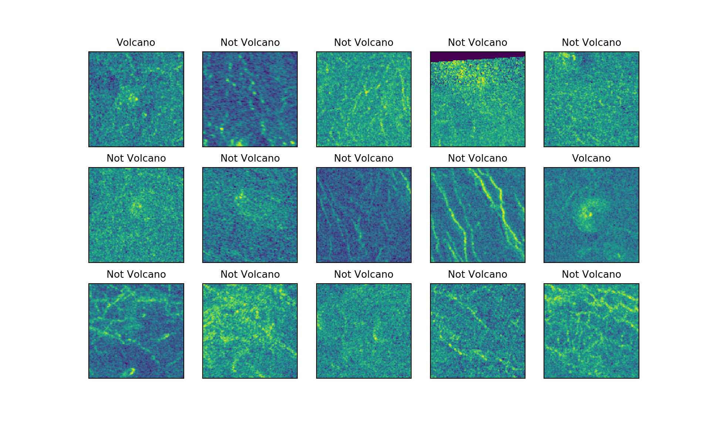
Observations:
Let’s look at the pixel value distributions for these images.
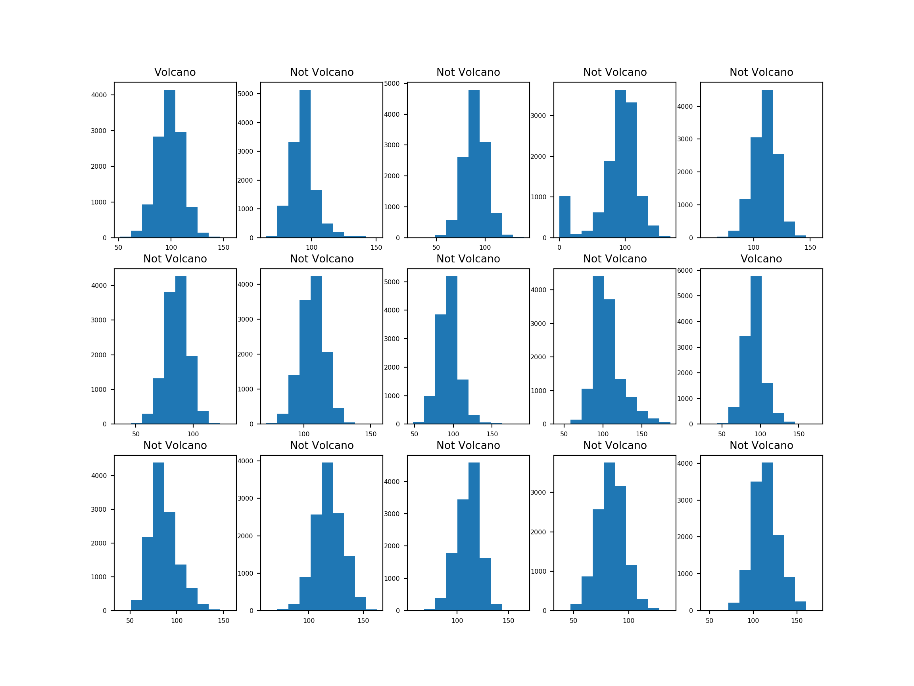
Observations:
First, let’s calculate the number of Corrupted pixels (pixel value = 0) per image.
Then we will define a threshold to find and filter corrupted records.
Let’s look at some of the corrupted images
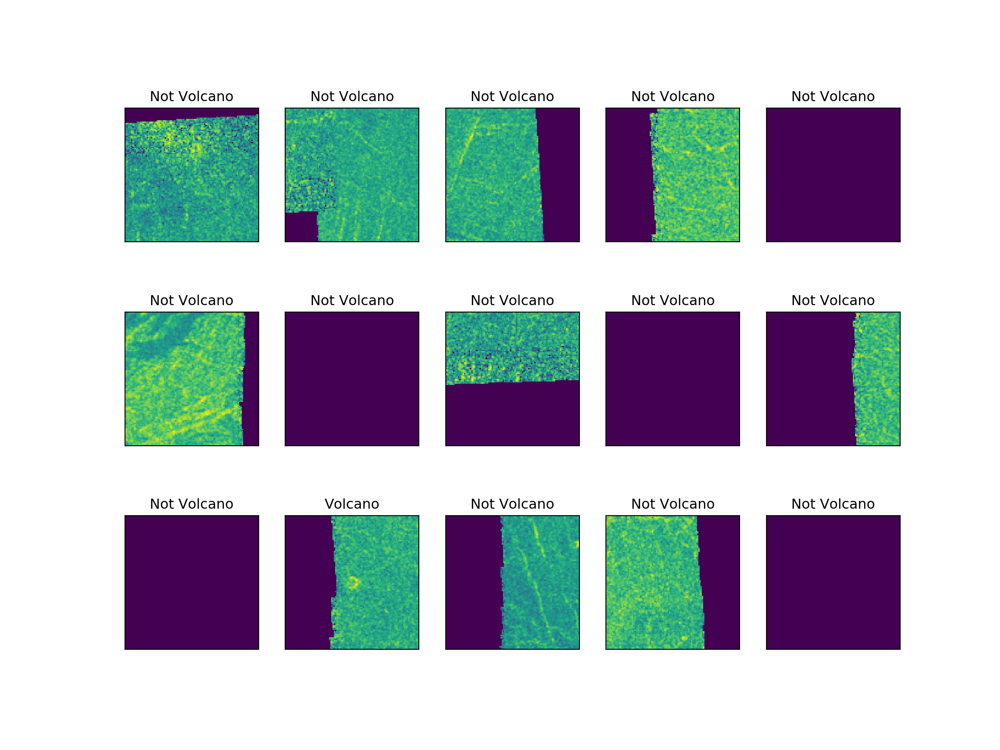
## MEAN of Corrupted Pixels 8190.0
##
## STD of Corrupted Pixels 4500.0
##
## MIN of Corrupted Pixels 1.0
##
## 25% of Corrupted Pixels 4020.0
##
## 50% of Corrupted Pixels 11198.0
##
## 75% of Corrupted Pixels 12100.0
##
## MAX of Corrupted Pixels 12100.0Quartile Plot
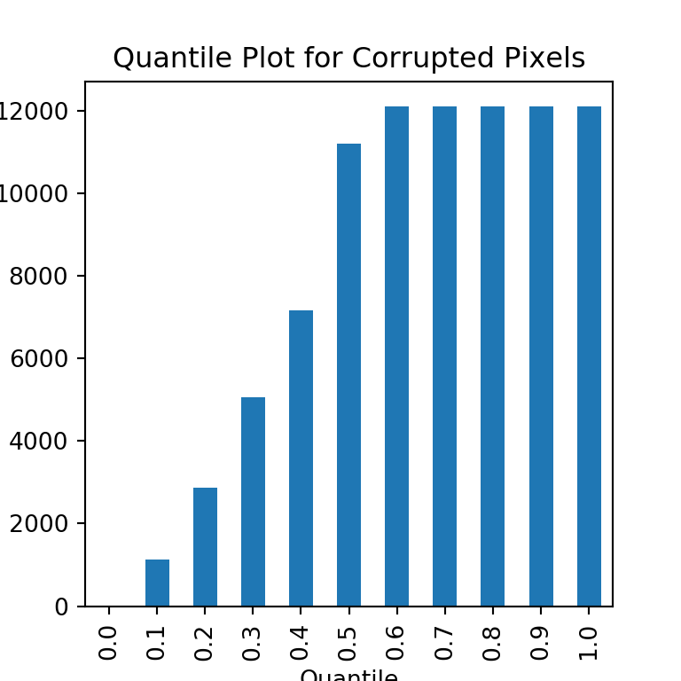
Observations:
Almost 50% of the corrupted images have all the pixels corrupted.
25% of the corrupted images have around 4000 pixels corrupted.
10% of the corrupted images have around 2000 pixels corrupted.
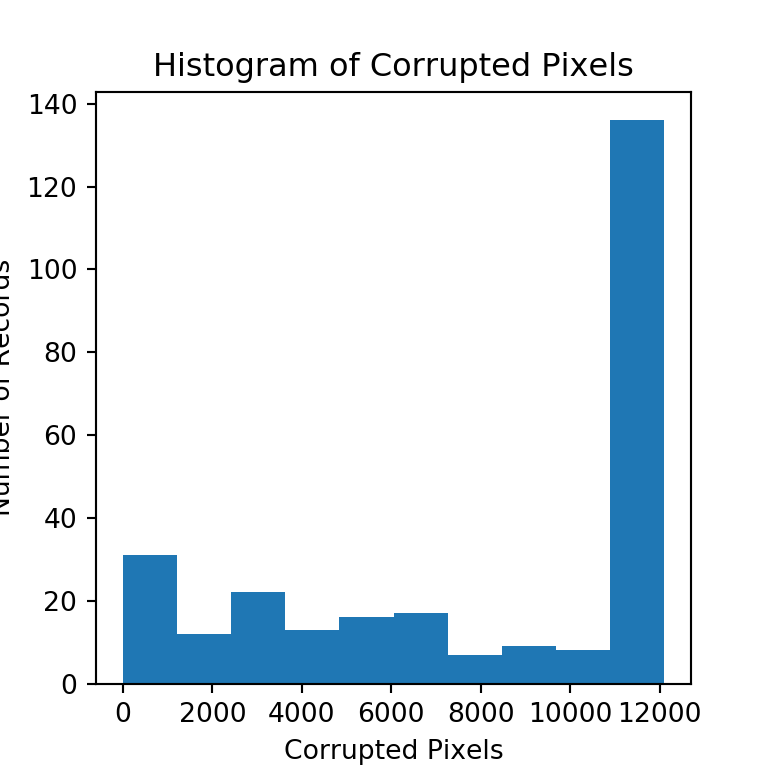
Observations:
Let’s pick an example from each bin and see how the image looks
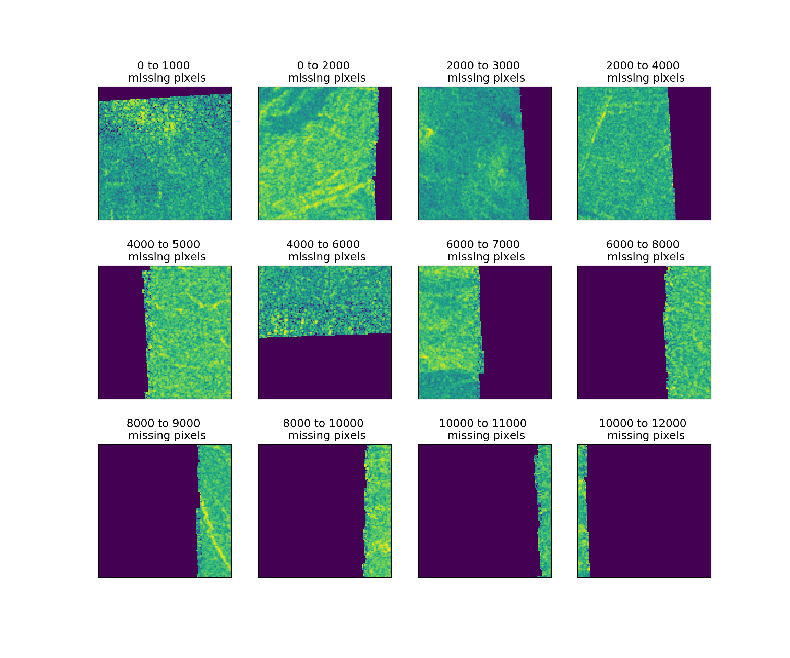
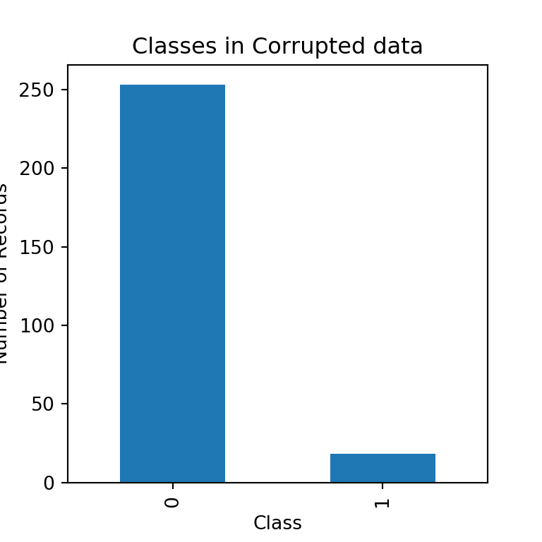
Observations:
Lot of corrupted images do not have volcanoes in them.
Only a few corrupted records do have volcanoes.
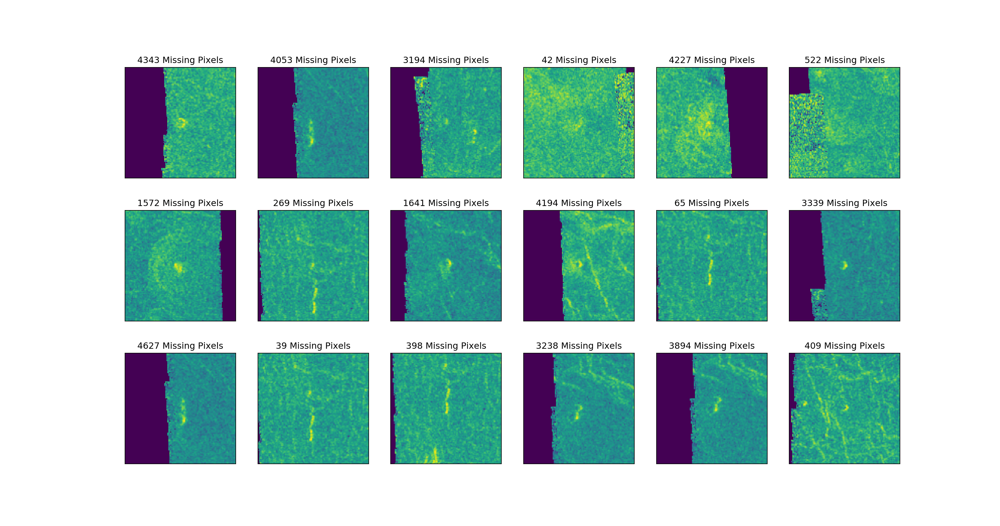
As we already have a Class Imbalance (very few images with Volcanoes) in the target variable on our original dataset, let’s try not to remove the corrupted images that has volcanoes. Instead, let’s fill the corrupted pixels in the image with the mean values of the image.
But, should we use Row means or Column means?: It seems, for most of the images, the entire column is corrupted. So, let’s use row means of image to replace the corrupted pixel.
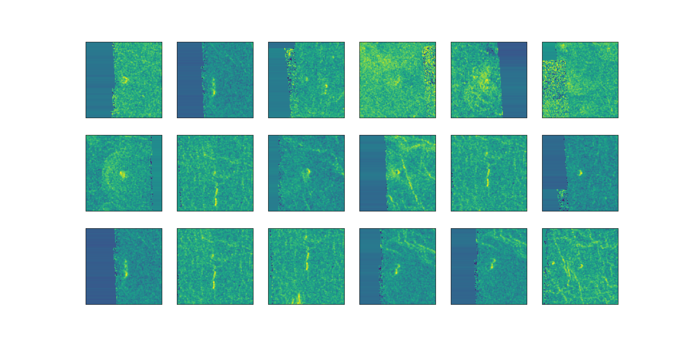
The images doesn’t look good. Row means doesn’t seem like a great idea.
Instead let’s compute the mean of every pixel for all the images that are not corrupted and use those means to replace the corrupted pixels in corrupted images.
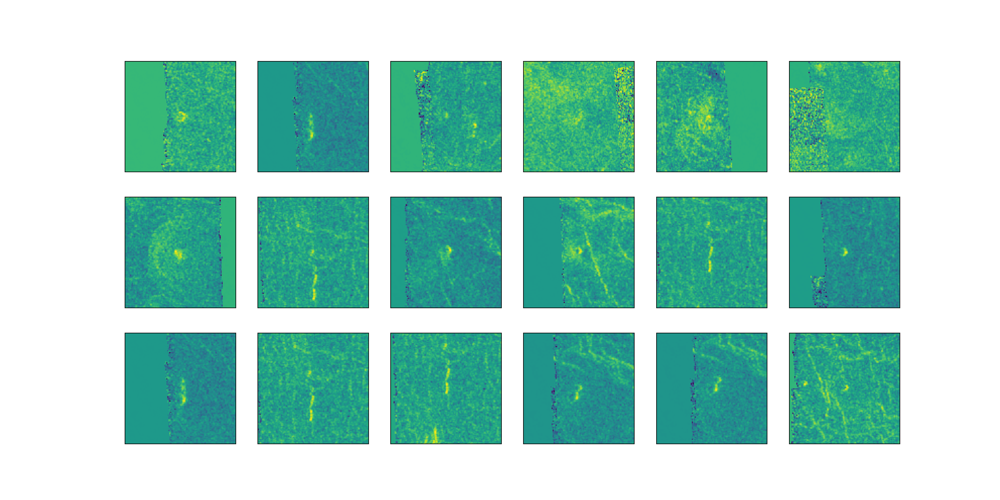
Definitely not a wonderful improvement, but much better than using row means.
Now, in this final attempt, let’s try to replace the missing/corrupted pixels by flipping the image (mirroring) and use the corresponding pixels from flipped image.
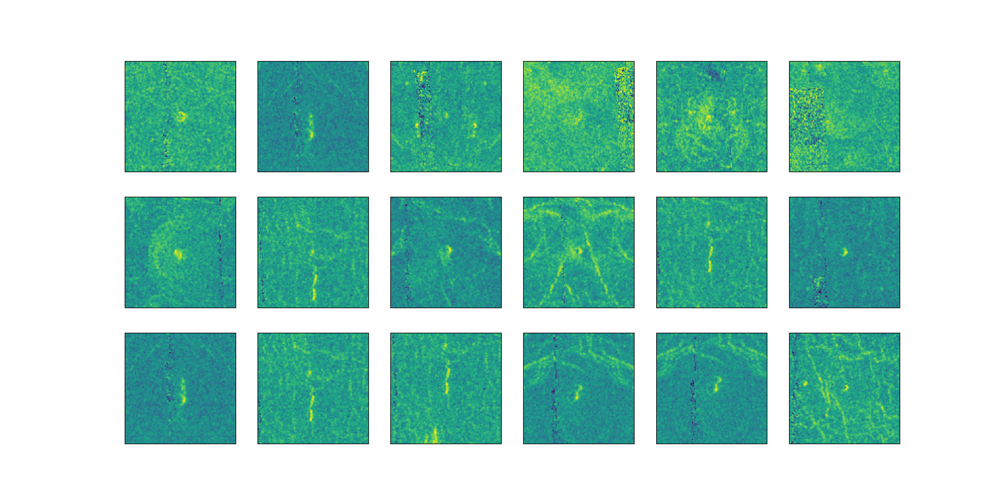
## Training Samples: 6747## Validation Samples: 2187## Test Samples: 547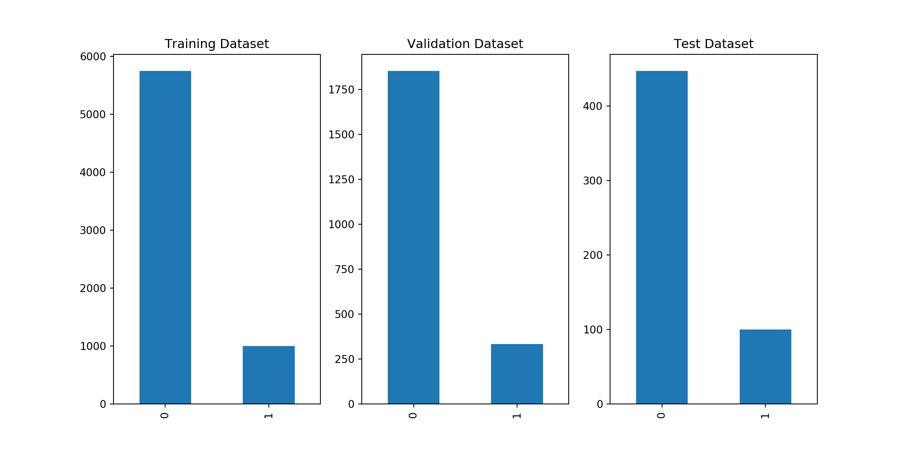
It is a good practice to normalize data before feeding it to the learning algorithm. Algorithms like gradient decent will converge faster if we normalize/standardize the input data.
## Number of Input Examples: 6747## Number of Input Features: 12100## X_train shape: (6747, 12100)## y_train shape: (6747,)## X_val shape: (2187, 12100)## y_val shape: (2187, 1)## X_test shape: (547, 12100)## y_test shape: (547, 1)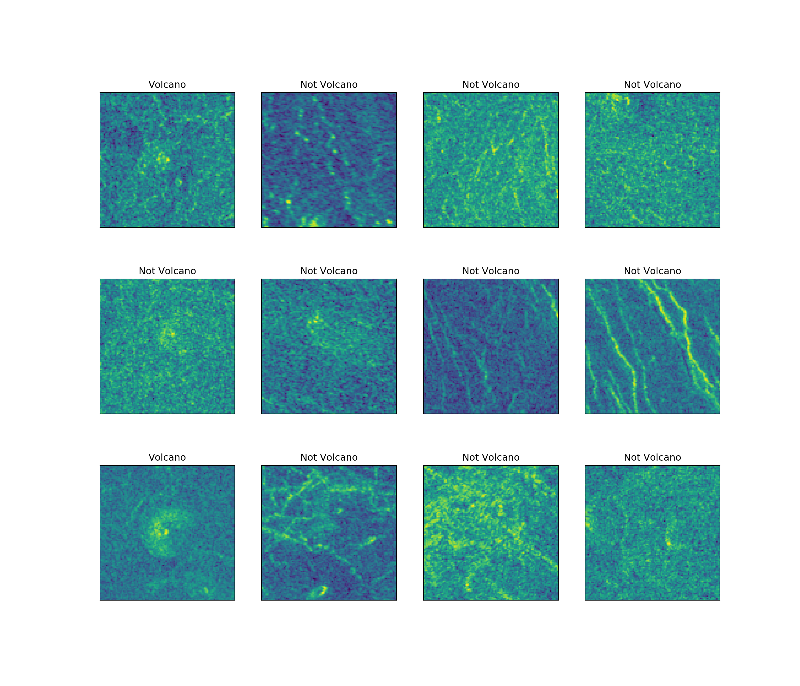